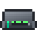
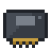
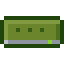
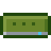

Reference: pages
Reference
Logic Die
encodedlogistics:logic_die · Item · Stacks to 64 · Creative tab: Encoded Logistics: Materials
The first-tier chip, etched on the Lithography Press from a Silicon Wafer and redstone with the Logic Photomask. Nearly every device needs one.
Works with
How to get it
Used to make
 24-Port L2 Switch
24-Port L2 Switch 2U Network Controller
2U Network Controller 32K Storage Die
32K Storage Die
48-Port L2 Switch Access Point
Access Point Access Terminal
Access Terminal Card Punch
Card Punch Card Reader
Card Reader Collector Plane
Collector Plane Control Interface
Control Interface Deployer Plane
Deployer Plane Disk Drive
Disk Drive Display Panel
Display Panel Drive Bay
Drive Bay
EEPROM Cartridge Egress Port
Egress Port Expansion Cabinet
Expansion Cabinet Filter Module
Filter Module Firewall
Firewall Fluid Sensor
Fluid Sensor Gateway
Gateway Ingress Port
Ingress Port Inventory Sensor
Inventory Sensor Inventory Tap
Inventory Tap Light Sensor
Light Sensor Line Printer
Line Printer LTO Tape Drive
LTO Tape Drive LTO-7 Tape
LTO-7 Tape Midrange System
Midrange System NAS
NAS Network Controller
Network Controller Optical Transceiver
Optical Transceiver Point-to-Point Link
Point-to-Point Link Presence Sensor
Presence Sensor Programmable Logic Controller
Programmable Logic Controller Protection Card
Protection Card- Rack Elevation
 Radio Module
Radio Module Redstone Control Module
Redstone Control Module Small Wireless Bridge
Small Wireless Bridge Tape Drive
Tape Drive Threshold Sensor
Threshold Sensor Timer Module
Timer Module
Trunk Card Trunk Port
Trunk Port
Uplink Card UPS
UPS
Where it's documented
- Lithography (Crafting and automation)
- Access and Fabrication Terminals (Terminals and access)
- Arcforge (Integrations)
- Control Interface (Control and facility)
- Network Controllers (Networks)
- Storage Dies and Drives (Storage)
- Switches and VLANs (Networking)
- Your first network (Getting started)
- Drive Bay (Storage)
- Fabrication materials (Crafting and automation)
- Programmable Logic Controller (Control and facility)
- Progression (Getting started)
- Rack devices (Server racks)
- Display Panels (Control and facility)
- Bridges and links (Networking)
- Firewall and security (Server racks)
- NAS and SAN (Storage)
- Fabricators and Gateways (Crafting and automation)
- LTO tapes and Tape Libraries (Storage)
- Rack Elevations (Server racks)
- Cable parts (Networks)
- Midrange storage (Storage)
- Wireless (Networking)
- The Midrange line (Crafting and automation)